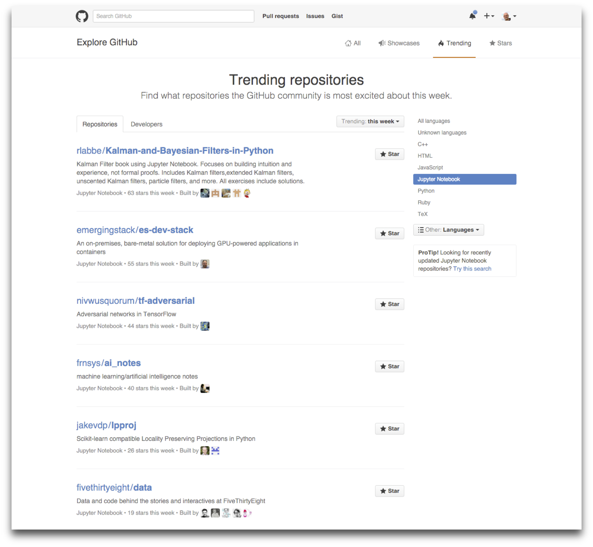
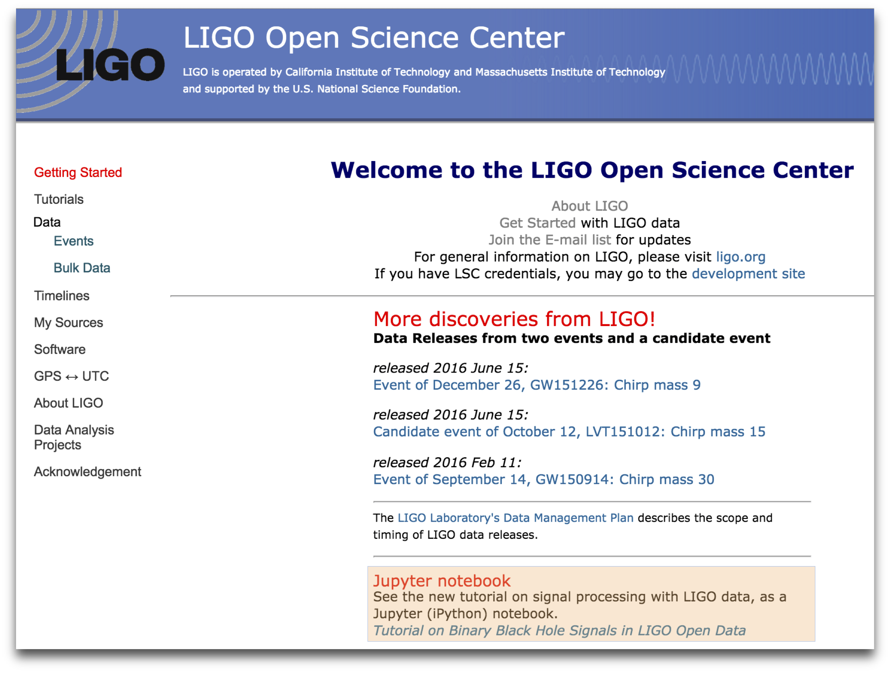

- Scientific software developer, Quant researcher, formerly quant at Bloomberg, and adjunct at Columbia and NYU
- Founded QuantStack in 2016
- Core developer of Project Jupyter: mostly focused on widgets.
- Data visualization in the browser: bqplot, pythreejs, ipyleaflet
- C++ scientific computing: xtensor, xeus
A piece of career advice for newcomers
Get involved in open-source early in your carrer
- Contribute to a large project that you are already using.
- Start a small project on your own, that may be useful for others.
In both cases, start small.
You can have a lot of impact
- A simple CSS fix in Jupyter can impact tens of thousands of users.
- Smooth ramp of complexity from the drop-by contributions to becoming core contributors to major packages
- Another dimension for growth than climbing the corporate ladder
Finally you will find some of the most inclusive and diverse communities.
- Jupyter
- Scipy
- nteract
- Django
- Sage
A piece of advice for employers
- Encourage employees to contribute to the software they rely upon in their work.
- In their free time, let them contribute to anything unrelated!
- This gives a new dimension to grow for your engineering. Other career perspective than becoming a manager.
- Help you recruit people, show off the quality of your tech teams.
Roads and bridges
- Open source is not for crazy hippies and closed-source software is not evil.
- Open source is the backbone of scientific computing.
- compilers, interpreters, OSs, scientific libraries, package managers.
- You cannot afford to redo all of that yourself.
- Open source is common infrastructure used by everyone
Roads and bridges
Open up your phone.Your social media,
your news, your
medical records, your
bank: they are all using
free and public code.
-- Nadia Eghbal
What happens when infrastructure breaks?
The case OpenSSL
Now what happens when numpy / jupyter / scipy / pandas / conda breaks?
- There is only a handful of developers working on Pandas full time
- No full-time developer working on numpy at the moment
Organize!

Our action
-
Work with the NumFOCUS leadership on the creation of a EU branch or separate EU entity.
-
Creation the PyData Paris meetup.

-
What next?
The language war
- What happens when you say "Java" in a C++ conference?
- What happens when you say "MatLab or R" in a Python conference?
The language war
There is no reason for R, Julia and Python to be in competition. They have very similar communities
Duplication of effort hurts sustainability and inter-operability.
- Package management
- IDEs, developer tools
- In-browser data visualization tools
- Data structures
All these require collaboration beyond language boundaries.

- Fernando Perez

Poll
Raise your rand if you
- Have heard of IPython or Jupyter
- Have used IPython or Jupyter
- Have used the Jupyter notebook
- Have used interactive widgets in the notebook
IPython: Interactive Python, 2001

Jupyter Team

and 500+ more contributors
Sponsors

Jupyter notebook
- Interactive browser-based computing environment
- Exploratory data science, ML, visualization, analysis, stats
- Reproducible document format:
- Code
- Narrative text (markdown)
- Equations (LaTeX)
- Images, visualizations
- Over 50 programming languages
- Everything open-source (BSD license)
The Jupyter Notebook

Kernels

... more than 70 different kernels
Adoption
2015 IBM survey: 3M users

Measuring Adoption
Approximately 600k notebooks on GitHub
Commercial Offering
- Google DataLab
- Microsoft Azure
- AWS
- CoCalc (SageMathCloud)
- Wakari.io
Other Large-Scale Deployments
Generally using the JupyterHub multi-user server
- Educational:
- UC Berkeley
- Cal Poly
- U. Sheffield
- ETH Zurich
- NERSC (National Energy Reseach Scientific Computing Center)
- San Diego Supercomputing Center
- Minnesota, CU Boulder, Compute Canada
- CERN
- Wikimedia Foundation
- Danish e-Infrastructure cooperation.
- Mybinder.org
Enabling Reproducible Science
Enabling Reproducible Journalism

More Than Notebooks

Jupyterlab

Demo
The HTTP of Scientific Computing
A specification matters a great deal more than any implementation.Well specified
- Communication protocols
- File formats
- Serialization Schemas
transformed Jupyter in the HTTP of Scientific Computing for
- Exploratory Analysis
- Data Visualization
- In a language agnostic fashion
What is missing?
The interface to the REPL has been abstracted out by Jupyter
Interoperability between the languages of scientific computing is still poor
- Data Structures for Data Sciencess
- The scalability Gap

Thank you!
jupyter.org
quantstack.net